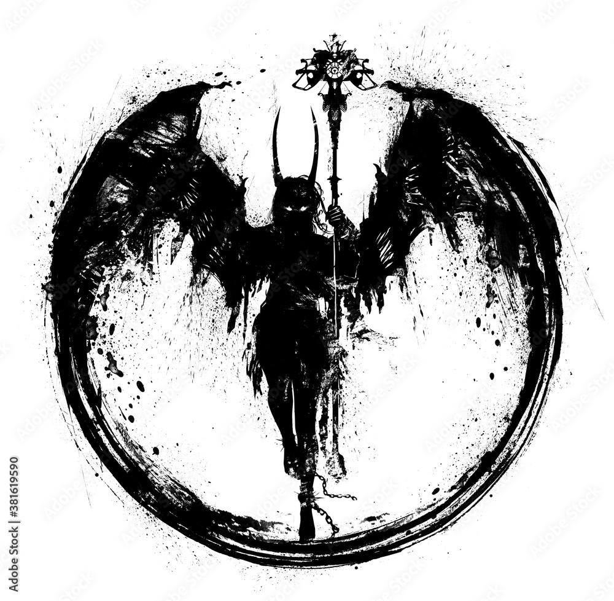
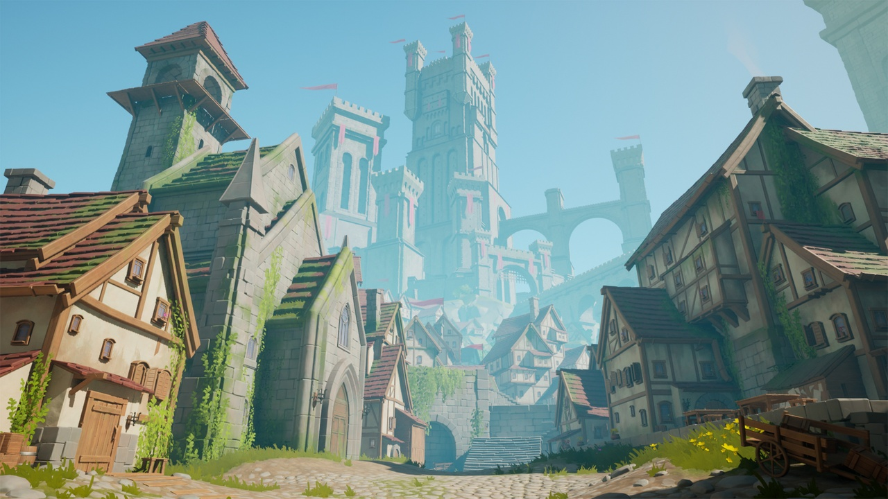

Random Encounter:

Anima believes not in the trappings of armor and weapons. His scars are displayed proudly, filled in with metal as befits a man of his station, and his hands are permanently stained with blood and iron. He fights more like an animal than a devil - which would explain why even the Hells would not want him.
At the epicenter of the rebellion when it began, Anima was the most affected of the six Guardians. Given the excuse to kill indiscriminately, he did - city guards were forced to defend the Citadel with Kalis as Anima roamed the streets, a one-man army. He killed many - but few stayed dead.
Anima now manages the ghostly memories that rise and threaten the ancient Citadel Agartha. With him gone, the City and Wilds will become more dangerous as these revanants return. There is no earthly explanation that can justify these ghosts, save perhaps the magic of Genius...
